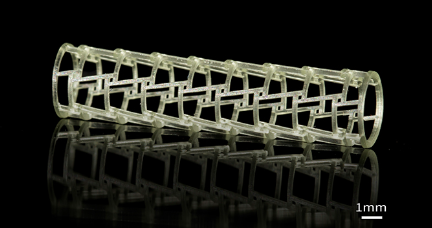
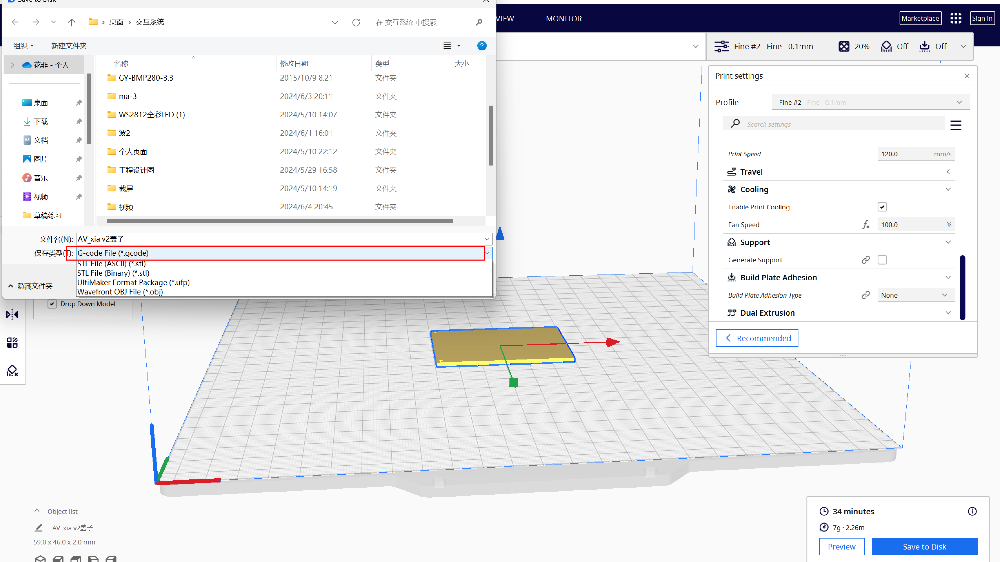

01 learn 3D printer knowledge
BMF PRECISION TECH
Official website(bmftec.cn)1-1 New application
1.1 Precision electronic device
With the deepening popularization of high-end application scenarios such as 5G communication for the Internet of
everything and new energy vehicles, miniaturization, precision and integrated precision electronic device
innovation is imperative to meet the needs of large-capacity data transmission and high-speed and high-density
signal transmission. Miniaturization, increasing number of devices and communication density, and design trends
for faster transmission speeds are some of the challenges facing electronic device manufacturing today. With the
advent of high-precision 3D printing, direct 3D printing of electronic devices is becoming a viable alternative
to traditional manufacturing processes.
For example: optical fiber connector

1.2 Precision medical instrument
With the improvement of the economic living standards of Chinese residents, the awareness of medical care has
gradually strengthened, so the demand for precision medical equipment products is also rising. The development
trend of medical devices in the future will become more and more micro and precise, which makes the manufacturing
cost and manufacturing cycle more and more high. Miniaturization, integration and precision are the future
development trends, which will bring great challenges to traditional manufacturing methods.
For example:Cardiovascular stent(Can quickly print all kinds of complex structures)
1-2 new technology about material
Typically used in (Stereolithography,SLA) or (Digital Light Processing,DLP) 3D printing techniques, parts can be
printed with fine detail and good surface finish.
Features:
1.High resolution:Suitable for printing fine structures and complex geometric shapes.
2.Good surface finish:The printed part has a smooth surface and requires less post-processing.
3.Wide range of applications:can be used in prototyping, mold manufacturing, art creation and other fields.
1-3 Machine
nanoArchR S130
Optical accuracy: 2μm; Printing format: 50×50mm; Extreme microscale additive manufacturing equipment.
Features:
1.Ultra-high precision (XY printing accuracy up to 2μm)
2.Low layer thickness (5μm~20μm printing layer thickness comparison)
3.Micro-scale printing capability
4.Optical monitoring system, autofocus function
5.configuration of air floating platform,Improve print quality
6.Excellent light source stability
7.Supporting powerful printing software, slicing software
Application: Micro spring array
1-4 New paper
The research group of Professor He Rujie from Beijing Institute of Technology "JAC" :
3D printing accuracy and mechanical properties of precursor conversion SiOC ceramic
microlattice structures
The precursor converted SiOC ceramic material (PDC-SiOC) has excellent oxidation resistance, thermal stability
and mechanical properties, and is expected to be used as high temperature resistant materials for aerospace. In
recent years, lattice structures with artificially designed periodic structures have become one of the research
hotspots in the field of structural mechanics because of their excellent mechanical properties. However, the
traditional machining method is difficult to realize the high precision manufacturing of complex PDC-SiOC lattice
structures. 3D printing can realize the integrated molding of complex structural ceramic materials, especially in
the field of complex ceramic lattice structure manufacturing has shown great advantages. Among them, the light
curing 3D printing technology has the highest molding accuracy and is suitable for the high-precision manufacturing
of PDC-SiOC lattice structures. However, on the one hand, there are still many limitations on the manufacturing
accuracy and mechanical properties of PDC-SiOC ceramic lattice structure 3D printing, and the structural feature
size is generally several hundred microns. With the development of PDC-SiOC structures and devices toward
miniaturization, the feature size is usually less than 100 μm or even smaller, although there are currently
extremely high precision 3D printing methods such as two-photon lithography, but the size of the prepared materials
is too small and difficult to apply. On the other hand, the reported PDC-SiOC lattice structures have weak
mechanical properties, and their compressive strength is generally only 0.06 ~ 10MPa. It is urgent to carry out
research on the structure of PDC-SiOC microlattice with high precision and high strength 3D printing.
02 Read gcode
We used Fusion to model the display box and the display cover to look good on the display we placed on the chest of
the bear doll.
2-1 Meaning analysis
Display box
Display cover
2-2 The model is transferred to Ultimaker Cura
Click 3D Printing in the file
Choose the specifications of 3D printing
2-3 Print parameter setting
1.Display cover printing parameters
Wall Thickness:1.6mm
Wall Line Count:4
Horizontal Expansion:0.0mm
Top/Bottom Thickness:0.8mm
Top Thickness:2.0mm
Top Layers:5
Bottom Thickness:2.0mm
Bottom Layers:20
Infill Density:20.0%
Infill Pattern:Grid
Printing Temperature:200.0℃
Build Plate Temperature:60℃
Print Speed:120.0mm/s
Print Speed:120.0mm/s
Fan Speed:100.0%
Build Plate Adhesion Type:None
2.Display box printing parameters
Wall Thickness:1.6mm
Wall Line Count:4
Horizontal Expansion:0.0mm
Top/Bottom Thickness:0.8mm
Top Thickness:2.0mm
Top Layers:5
Bottom Thickness:2.0mm
Bottom Layers:20

Infill Density:20.0%
Infill Pattern:Grid
Printing Temperature:200.0℃
Build Plate Temperature:60℃
Print Speed:120.0mm/s
Print Speed:120.0mm/s
Fan Speed:100.0%
Build Plate Adhesion Type:None
2-4 Derivation step
Start by clicking slice at the bottom
Shows the time for the model to print
Finally save as gcode format
03 Use 3D printer to manufacture
3-1 Save the file to the memory card, and then insert the memory card into
the 3D printer
3-2 Click Print, find the file you want to print, click Start printing
3-3 When the base plate and nozzle are heated, the 3D printer begins to
print, and we can see the printing progress on the display screen
3-4 Print complete
3-5 The final print is complete and we can see the finished product on
the backboard
04 Postprocess the surface
We can see that the work is not perfect, and there is no separation between
the bottom and the body of the box
Use a knife to carefully separate the bottom and top of the box and remove
debris from the box
At this time, you can see that the edges of the box and the bottom plate are
very rough and need to be polished
After being sanded with 80 mesh and 500 mesh respectively, we can see that the
box and bottom become smooth and round
05 Read gcode
5-1 Meaning analysis
Part A
;TYPE:WALL-INNER
WALL-INNER refers to the instruction to print an internal wall, which usually means that the print head will move
in the inner wall area, forming a closed internal structure. This type of path is often used to create print
objects with internal support or padding.
Another:
;TYPE:WALL-OUTER
;TYPE:WALL-OUTER refers to the part of the outer wall during the printing process. In 3D printing, outer walls are
layers or layers of material that surround the outside of the printed object, protecting the internal structure
and enhancing the overall strength.
;TYPE:SKIN
;TYPE:SKIN in Gcode files usually refers to the surface layer or overlay of the printed model. In 3D printing, a
skin layer is an added layer or layers of material beyond the outer walls of a model that can provide additional
protection, improve appearance, or meet specific mechanical properties requirements.
Part B
G1:This is a straight line move instruction that tells the CNC machine to make a straight line cut along a
specified path at a given speed.
F39977.9:This is a speed parameter that indicates the feed rate at which the G1 instruction is executed,
usually in millimeters per minute.
X96.486:This is a coordinate parameter that represents the end position of the move on the X-axis.
Y105.287：This is another coordinate parameter that represents the moving endpoint position on the Y-axis.
E0.01536:This is a movement parameter of the extrusion axis (E axis), which represents the amount of
extruded material when performing the cut.
5-2 How to draw a gcode file
The method is to install a nozzleboss plugin in blender software, and you can directly import the gcode
file to generate the corresponding image.
related links
Step 1:
Open github and search for the plugin name in the search bar.
Step 2:
Select and click the first link and go to the corresponding library.
Step 3:
Click code and download the zip file.

Step 4:
Open blender and install the plugin in Preferences under the Editing tool.
Step 5:
Once the plug-in is installed, it is ready to use. Click Import G-code, you can import the corresponding file
to generate the image.
5-3 Outline draught
Display cover
WALL-OUTER

WALL-INNER
SKIN

Display box
WALL-OUTER

WALL-INNER

SKIN